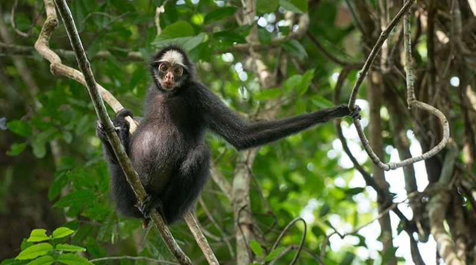
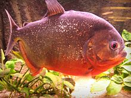

Introdução
Neste artigo, exploraremos a incrível diversidade de animais que habitam a Amazônia.
Animais da Amazônia
Macaco-aranha
O macaco-aranha é uma das espécies mais emblemáticas da região, com sua agilidade e inteligência.
Piranha Vermelha
A piranha vermelha é conhecida por sua ferocidade e habilidade de caça em cardumes.
Conclusão
A Amazônia abriga uma riqueza de vida animal que merece ser protegida e preservada para as gerações futuras.